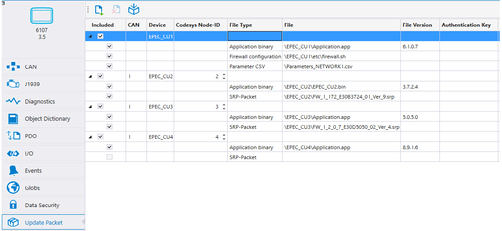

A software update packet can be created in MultiTool Creator, to be loaded to the target device.
The Update Packet tab configures the contents of the update packet. By default, all the devices connected to the display or IoT unit are listed. The application binaries of the devices are added automatically to the list and their versions are defined according to the devices' configurations. If the device's firmware is being updated, the firmware SRP-Packet must be selected.

Included files and their versions can be changed. Double-click on the file name to select a different file. The File Version field can be edited, which also affects the Application Version String setting of the device, which can be seen from the device properties in the CAN tab.
Additional files or folders can be added to 6000/X Series devices by selecting the icon and removed with the icon.
icon.
To add the update functionality to the code template, select Generate Update functionality to code template at the bottom of the screen.
To generate an updat packet, select the icon. Note that all the application binaries have to be built before generating the update packet.
The generated software packet can be loaded to the target display unit, for example, via one of the following options:
USB memory and ApplicationLoader
FTP transfer
GlobE service
|
|
When updating unit firmware, the SRP-Packet needs to be separately loaded from Epec extranet. |
|
|
Some applications have separate checksum files. The checksum files are not shown in the selection window, but added to the packet automatically along with the application binary. |
|
|
The software update package does not support 2000 series units. |
Epec Oy reserves all rights for improvements without prior notice.
Source file topic200204.htm
Last updated 25-Jun-2025